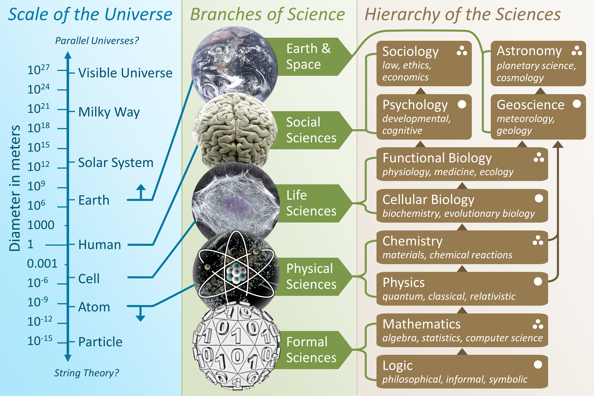
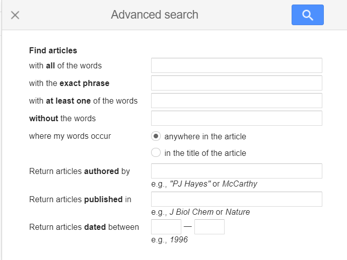
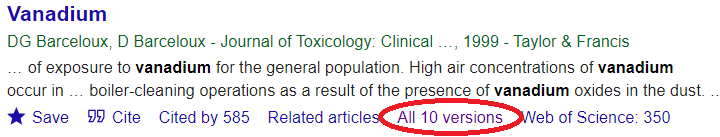

For folkebibliotekarer
2024-10-03
Slides?
https://christianknudsen.info/notes/20241003-natvid-lit-search
”Formidling af den digitale materialeoverbygning” er arbejdsgruppens anker og vi kommer derfor ikke uden om digitale kilder, som er tilgængelige for folkebibliotekerne. Det er meget forskelligt hvad der abonneres på lokalt, men alle har adgang til overbygningslicenserne og services som centralbibliotekerne og Det Kgl. Bibliotek stiller til rådighed
Det er begrænset hvor meget naturvidenskab er repræsenteret på ovennævnte side, så OA vil være godt.
https://www.sdu.dk/da/uddannelse/bachelor/biblioteksvidenskab_it_og_kommunikation/adgangskrav
begge genereret af chatgpt
En hermeneutisk dekonstruktion kan betyde mange ting
Partikelentanglement er et ret specifikt fysisk fænomen.
Det er koherens og superposition også.
Det betyder at det faktisk er ret specifikke og meget konkrete ting vi leder efter.
 ::: notes
Baseret på Auguste Comtes teori om videnskabens udvikling. Vi starter med generelle emner, og bevæger os op af i et hierarki hvor videnskaberne bliver tiltagende komplekse og mindre generelle. Teorien forudsiger at der vil være højere grad af konsensus blandt forskerne og hurtigere udvikling i eksempelvis fysik end i socialvidenskaberne.
Det er jo fascinerende at det åbenbart gør dem vanskeligere. Jo højere i hierarkiet vi kommer, jo større udsikkerhed er der om hvad der er rigtigt og forkert. Men af en eller anden årsag forekommer det os lettere at søge i/efter.
:::
Hvilke mikroorganismer? Hvad kalder vi ellers enzymer? Proteinsyntese - hvad sker der?
| Term 1 | Term 2 | Term 3 |
|---|---|---|
| Mikroorganismer | Enzymer | Proteinsyntese |
| Microorganisms | Enzymes | Protein Synthesis |
| Bacteria | Biocatalysts | Transcription Translation |
| Fungi | Ribosomes |
(microorganisms OR bacteria OR fungi) AND (enzymes OR biocatalysts) AND (protein synthesis OR ribosomes)
Så langt så godt.
Hvor katten søger vi så?
I har den “digitale materialeoverbygning”.
Så vi må holde os til åbne søgemaskiner.
Bibliotek.dk er ikke så ringe endda
Svagheden er - at det er et ret begrænset indhold der søges i.
Det fine er at den avancerede søgning i bibliotek.dk taler samme sprog som netpunkt.dk
I må godt bruge den
Google Scholar bruges foruroligende ofte
Der er desværre ikke mulighed for at søge kun i OA-litteraturen.
Men!

Super relevant for biologi og kemi - og beslægtede fag.
Fysikerne har en lang tradition for at dele preprints.
CS, fysik (i meget bred forstand). matematik, statistik,
En smule elektroingeniørfag. Kvantitativ biologi, kvantitativ økonomi.
“Måske lidt om trykte kilder og hvorfor gamle titler også stadig kan være aktuelle.”
Det der med Bolivas råstoffer.